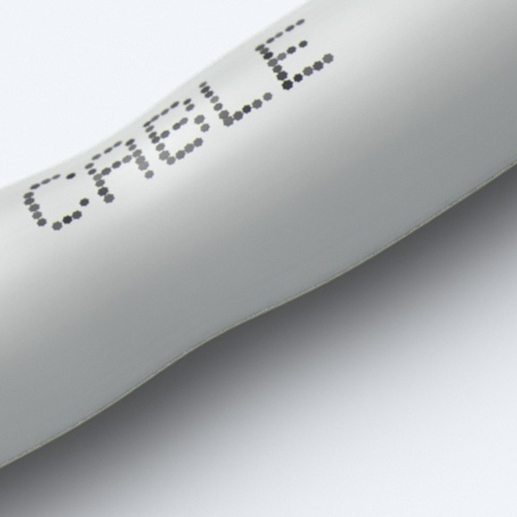
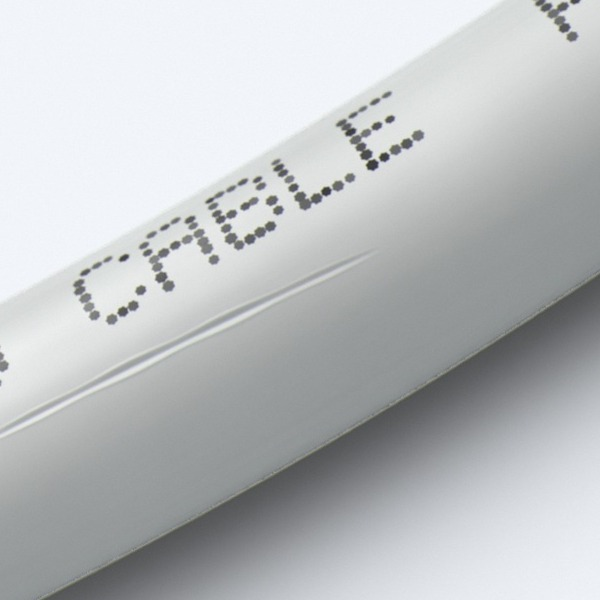
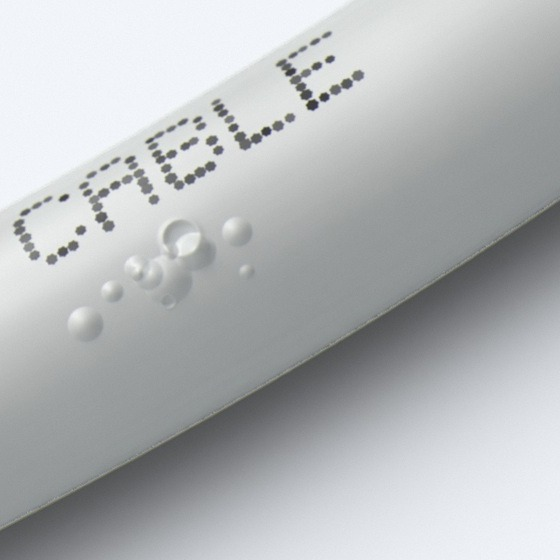
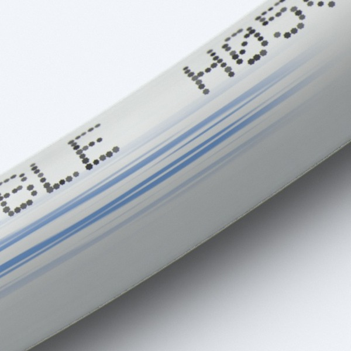
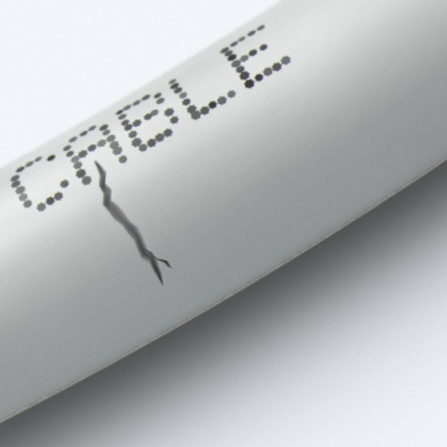
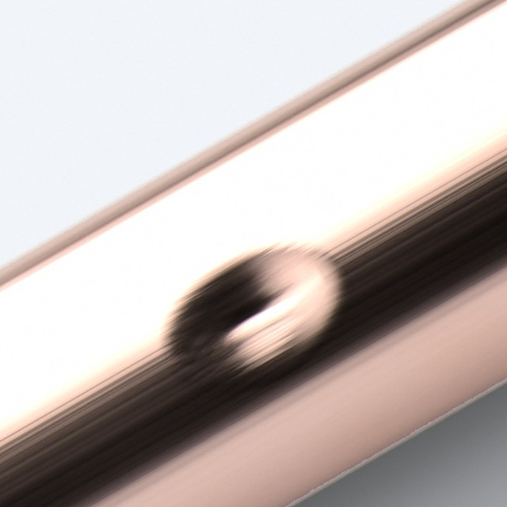
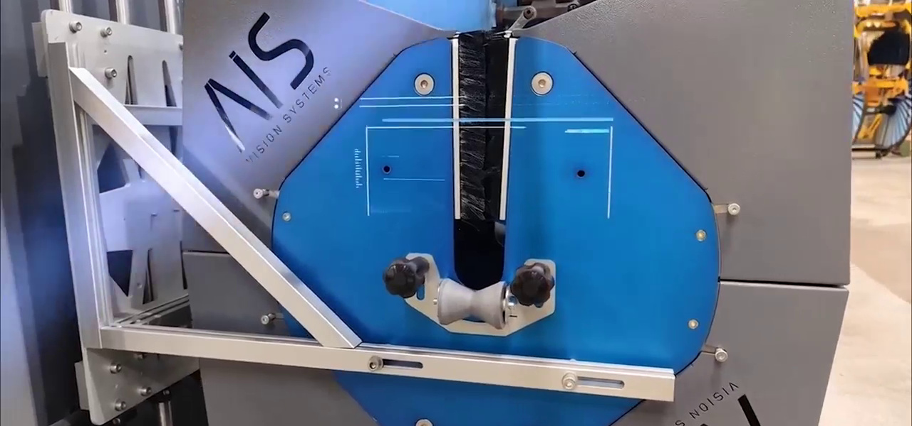

Inspección a 360° de la superficie de cables y tubos en producción continua: aislantes, recubrimientos y acabados. Inspecciona el 100 % de la producción con aprendizaje profundo, hasta 300 m/min, sin frenar la línea.
Cámaras en color de alta resolución, a 360° de la superficie
Motor de aprendizaje profundo propio, desarrollado por AIS Group
Alarmas y estadísticas de cada producción
Toda la superficie del cable y del tubo
Cables y tubos de hasta 80 mm de diámetro. Cada defecto dispara una alarma con su tipo, para que el producto defectuoso no llegue al mercado.
Deformaciones

Reducciones de sección

Arañazos y rozaduras

Burbujas

Defectos de color
Impurezas incrustadas

Grietas y fisuras

Defectos en tubos
Formato, inspección y control
Especificaciones para la integración del equipo en la línea. La cadencia depende del formato y de las inspecciones configuradas.
Equipo
Formatos compatibles
Cables y tubos de hasta 80 mm de diámetro. Superficies lisas o estriadas; distintos colores, según la configuración
Diseño
Integración en línea para inspección en movimiento (configuración mecánica según la línea)
Unidad de procesamiento industrial, según la configuración
Expulsor
No aplica; gestión mediante señal OK/NOK al PLC (alarma, parada o gestión del tramo según la lógica de la línea)
Centrador
Guiado y centrado a la entrada y a la salida, adaptados a la línea

Guiado del cable y protecciones del cabezal de inspección.
Instalación y manejo
Panel de control
Pantalla táctil de 21 pulgadas para visualizar y ajustar el sistema
Señalización
Baliza luminosa de estado del equipo
Instalación eléctrica
Alimentación monofásica en el punto de instalación
Mecánica
Acceso para limpieza y mantenimiento; guiado adaptado a la línea
De la imagen a la acción
Ajuste de recetas, análisis de imágenes y registro de resultados en un mismo entorno de producción.
Imágenes y resultados de la inspección en la interfaz del equipo.
Opciones de integración
Guiado y centrado; señal OK/NOK al PLC para alarma, parada o gestión del tramo; estación fuera de línea con desbobinado y bobinado; marcaje de defectos; mapa de metraje; TrazAIS: trazabilidad y serialización. No incorpora expulsor de envases.
Software
Aprendizaje profundo
Modelos precargados; entrenamiento con ejemplos para adaptar la detección de anomalías al producto, con Rosepetal
Recetas
Creación y ajuste de formatos sin programación
Datos de producción
Registro estadístico y copia de seguridad en la nube de recetas, imágenes y resultados
Gestión remota
Supervisión de producción y gestión de recetas vía web con credenciales seguras
Detección y alarma
Inspección a 360° en tiempo real y alarma con el tipo de defecto detectado
OCR
Lectura en línea de lote, fecha, referencia o contador, según configuración